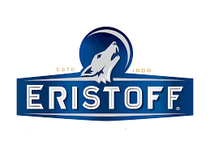
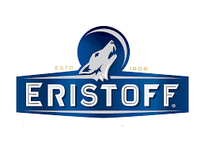

Master of Science in Marketing (MSc)
Kedge Business School, Bordeaux Campus, France (Present)
Currently pursuing my Master of Science in Marketing (MSc) at Kedge Business School's Bordeaux Campus, I am immersed in an enriching academic environment that equips me with the latest theories, strategies, and tools in marketing management. Throughout this program, I have delved deep into specialized areas such as Brand Management, Digital Marketing, and Product Innovation, honing my analytical skills and strategic thinking.
Case Study
Digital Marketing:
Developed a comprehensive digital marketing strategy and communication samples for the 2024 Netnocon conference.
Product Management:
-
Formulated product innovation ideas and action plans aimed at the French teenage market for Lactel .
-
Analyzed NielsenIQ data for ERISTOFF to develop short-term and long-term action plans to increase future sales.
 

Bachelor of Arts in English Language and Literature
Bachelor of Arts in French Language and Literature
Tamkang University, Tamsui, Taiwan (2017 - 2022)
My undergraduate journey at Tamkang University in Tamsui, Taiwan, was marked by a profound exploration of English and French language and literature. Pursuing dual Bachelor of Arts degrees in both disciplines, I engaged in rigorous academic coursework that deepened my understanding of linguistic principles, literary analysis, and cultural contexts.
My responsibilities encompassed designing and delivering engaging cultural activities and language courses, including the highly successful "Semaine du Nouvel An chinois" and "Journée Portes Ouvertes." I adeptly instructed students on various aspects of Chinese language and culture, including grammar, writing, and pronunciation, fostering a dynamic and immersive learning environment.
TBeyond the classroom, I actively participated in extracurricular activities, including contributing as a violinist to the university orchestra. These experiences not only enriched my academic pursuits but also fostered a holistic personal and professional development grounded in cultural appreciation and interdisciplinary collaboration.